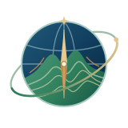
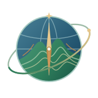
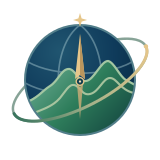
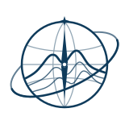

<!doctype html>
<html lang="zh-CN"><meta charset="utf-8"><meta name="viewport" content="width=device-width,initial-scale=1"><title>地理教学系统 · 品牌标志预览</title>
<style>body{margin:0;background:#f5f2e9;color:#0f3b5b;font:16px/1.6 system-ui,sans-serif}main{max-width:980px;margin:auto;padding:48px 24px}h1{font-size:28px;margin:0 0 10px}p{margin:0 0 30px;color:#506776}.grid{display:grid;grid-template-columns:repeat(auto-fit,minmax(270px,1fr));gap:20px}.card{min-height:260px;padding:26px;border:1px solid #d8d9ce;border-radius:14px;background:#fff}.card.dark{background:#071a25;color:#f5f2e9;border-color:#071a25}.sample{display:flex;align-items:center;justify-content:center;min-height:185px}.sample img{width:170px;height:170px}.compact img{width:56px;height:56px}.fav{display:flex;gap:24px;align-items:center;justify-content:center;min-height:185px}.fav img{image-rendering:auto}small{display:block;margin-top:8px;color:inherit;opacity:.75}</style>
<main><h1>地球 · 地形 · 指北 · 探索</h1><p>中学地理教学系统品牌标志视觉核验页。地形曲线为教学品牌图形，并非真实 DEM。</p><div class="grid"><section class="card"><strong>完整标志 / 浅色</strong><div class="sample"></div></section><section class="card dark"><strong>完整标志 / 深色</strong><div class="sample"></div></section><section class="card"><strong>导航栏标志 / 56px</strong><div class="sample compact"></div></section><section class="card"><strong>单色标志</strong><div class="sample"></div></section><section class="card"><strong>Favicon</strong><div class="fav"></div><small>16 / 32 / 64 px</small></section></div></main></html>
